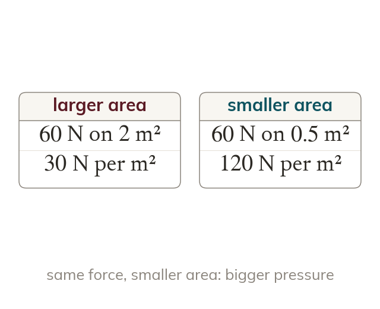
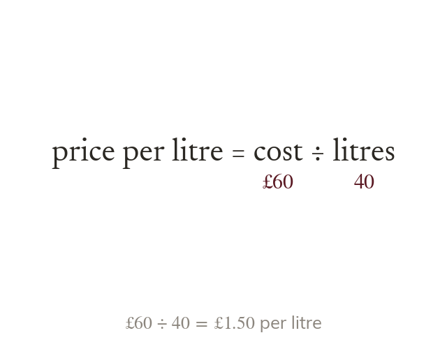
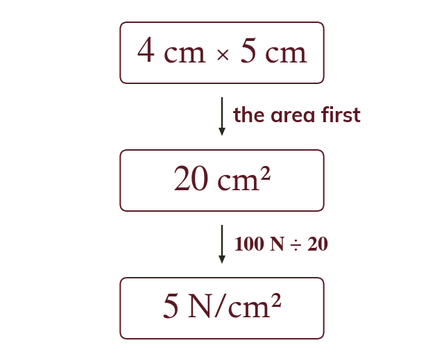
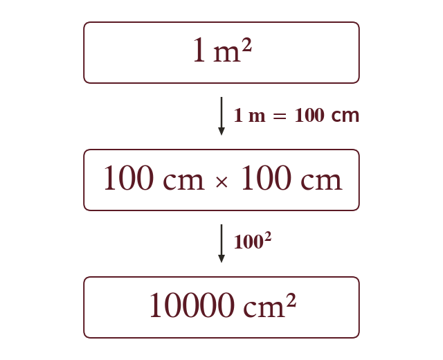

Pressure is force per area
Pressure is force divided by area, in N/m² or N/cm². The same force on a smaller area gives a bigger pressure.
A drawing pin goes into a board and a thumb does not, though the thumb pushes just as hard. The difference is the area the force is spread over, which is what pressure measures.
Work down the page at your own pace. Write every answer in your book first, then click to check it.
Read each card, then follow the worked examples one step at a time.

Pressure is force divided by area, in N/m² or N/cm². The same force on a smaller area gives a bigger pressure.

A rate is one measure divided by another, like pounds per litre. It rearranges exactly as speed, density and pressure do.
Pick an answer. If it's wrong, the feedback tells you which mistake it was.
Read each card, then follow the worked examples one step at a time.

A multi-step problem finds an intermediate quantity first, such as an area or a mass. Keep it exact until the end.

m² is cm by cm, which is cm². Convert an area with the square of the length factor.
Pick an answer. If it's wrong, the feedback tells you which mistake it was.
Finished? Next lesson: 9.10.4 Combining Compound Measures.
For each skill, tap the one that is true for you today. Your Revise pages start with anything you mark Not yet.
Your ratings are saved on this device only.
Log in, then search for a code to practise that skill.
Videos, worksheets and more on each part of this lesson.